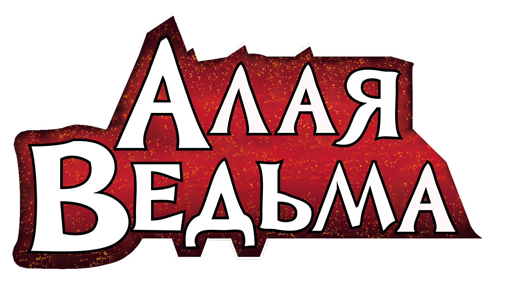

- Мстители (1963). Том 1. № 4-211;
- Вижн и Алая Ведьма (1982). Том 1;
- Мстители (1963). Том 1. № 233-255;
- Мстители Западного побережья (1985). Том 2. № 1-2, 33-102,
- Алая Ведьма Том 1 (1994),
- Рабочая сила (1994). Том 1.
- Мстители (1963). Том 1. № 397-402;
- Мстители (1996). Том 2; (1998) Том 3.
- Дом М. (2005),
- Мстители: Детский крестовый поход (2010).
- Мстители против Людей Икс (2012),
- Поразительные Мстители (2012-15). Том 1-2, 3 (с №27),
- Алая Ведьма Том 2 (2016-2017)
- Мстители (1963). Том 1. № 675-690;
- Мстители: Нет пути домой (2019),
- Даркхолд (2021),
- Суд Магнето (2021),
- Алая Ведьма Том 3 (2023),
- Мстители (2023). Том 9.